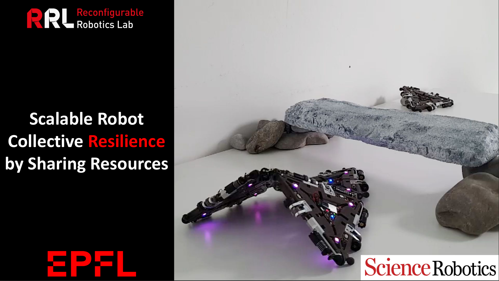
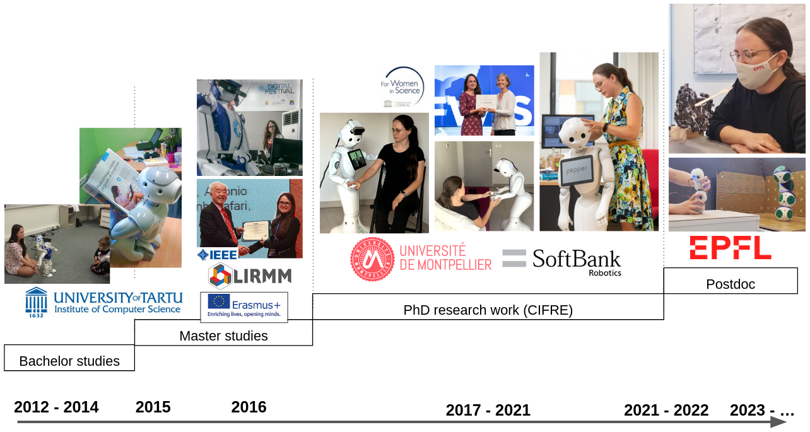
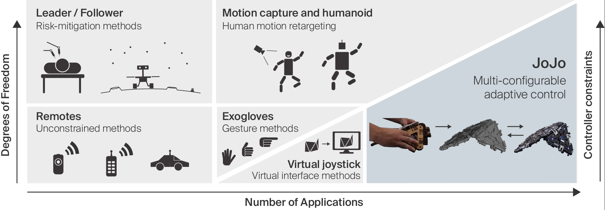
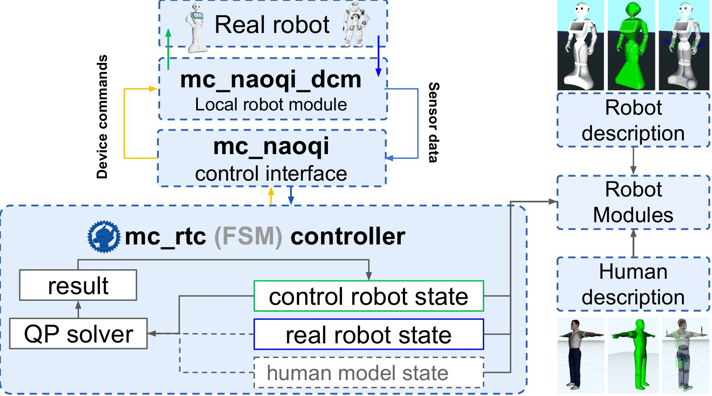
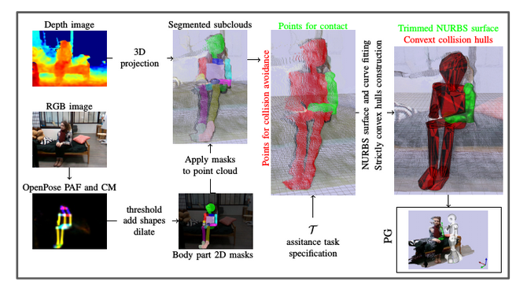
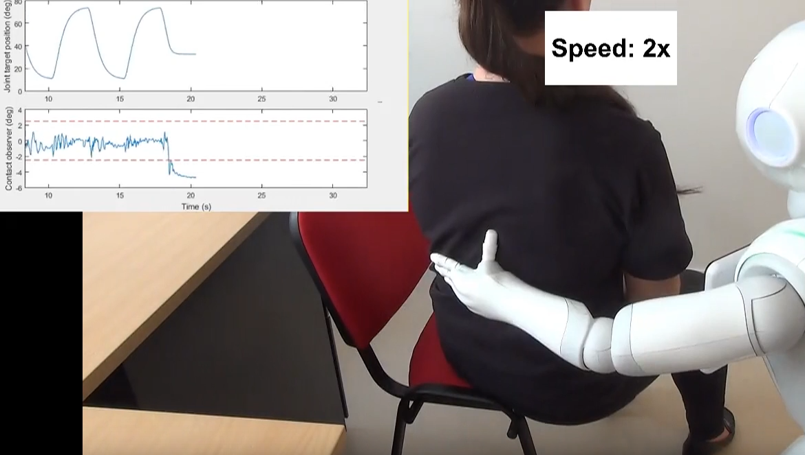
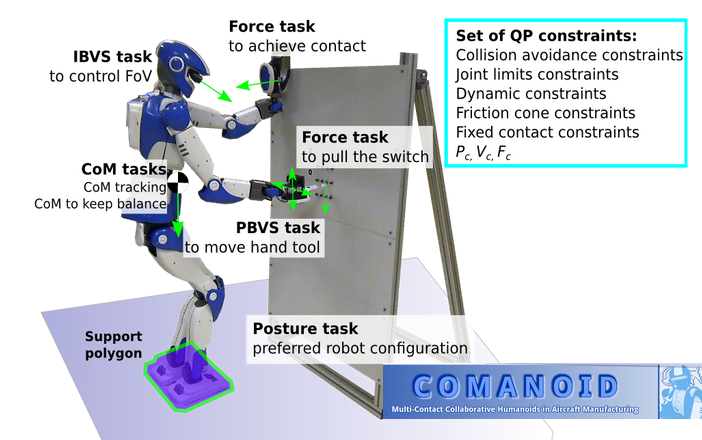

Robotics researcher
Motion, perception, and interaction for robots that work with people
I study robot motion generation, perception for closed-loop control, and human–robot interaction.
About
I am a robotics researcher with a background in computer science specializing in machine learning.
I have worked across several different robotics platforms in Estonia, France, and Switzerland, gaining experience in diverse research and engineering environments.
I study interactive and assistive robotic systems across a broad range of embodiments, including humanoids, mobile robots, modular, reconfigurable and origami robots, wearables, and exoskeletons.
- Perception, planning & control
- Assistive robotics
- Human–robot interaction
- Modular robotics
Professional path

Selected research



Multi-contact planning on humans for physical assistance by humanoid


Curriculum vitae
An overview of my professional path, research, and publications
Download CV (PDF)